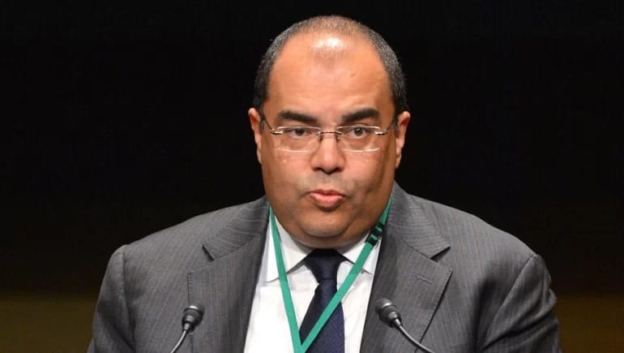
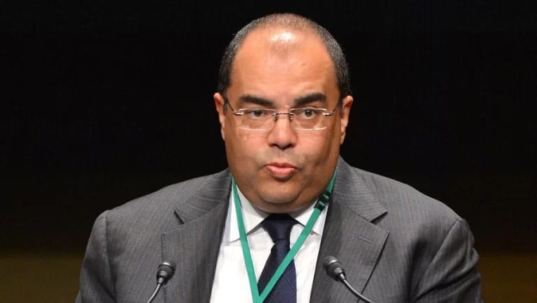

محيي الدين: السيدات تقود عدة مشروعات للصمود في مواجهة التغيرات المناخية والأمن الغذائي
Source : جريدة البورصة- Home /
محيي الدين: السيدات تقود عدة مشروعات للصمود في مواجهة التغيرات المناخية والأمن الغذائي

مايا مرسي: المرأة أمام تحديات عالمية في مجال البيئة والمناخ للحصول على التمويل.
راوية منصور: تمكين المرأة من خلال التمويل وتخصيص الأراضي والتدريب من أساسيات تحقيق التنمية المستدامة
قام بنك مصر بتنظيم حلقة نقاشية خلال مؤتمر الأطراف للأمم المتحدة لتغير المناخ المنعقد حاليا في مدينة شرم الشيخ تحت عنوان “المساواة بين الجنسين والتمويل الأخضر للمشروعات الصغيرة والمتوسطة”، تحدث فيها نخبة من رجال المال والأعمال ورؤساء البنوك والشركات منهم د. محمود محيي الدين، رائد المناخ للرئاسة المصرية لمؤتمر أطراف اتفاقية الأمم المتحدة للتغير المناخي COP27، الأستاذ محمد الأتربي رئيس مجلس إدارة بنك مصر، الدكتورة مايا مرسي رئيس المجلس القومي للمرأة، السيدة كاسيلدا برينيير مدير العمليات في AFD، السيدة راوية منصور رائدة الأعمال والرئيس التنفيذي لشركة رامسكو مصر وأويسيز تكنولوجيز موناكو والحاصلة على لقب “القيادية الأفريقية لعام 2019 وغيرهم.. وصرح الدكتور محمود محيي الدين، إن هناك ضرورة لتعزيز دور المرأة في قطاع الأعمال خاصة وأن قمة المناخ المنعقدة بشرم الشيخ هي قمة التنفيذ والشراكات، وذلك من خلال تبني نهج شامل وإعادة النظر في القواعد المتعلقة بمشاركة المرأة بهذا الصدد.
وفي هذا السياق، أشار “محيي الدين” في حديثه إلى المبادرة الوطنية للمشروعات الخضراء الذكية على مستوى المحافظات المصرية بالتعاون مع وزارة التخطيط والبيئة والتعاون الدولي، وعدد من الجهات المعنية، مؤكدًا أنها تمثيلًا مناسبًا للسيدات في الفئات الست؛ ولكن هناك حاجة إلى تعزيز مشاركة النساء في تلك المبادرة التي ستعقد كل عام.
كما أكد رائد المناخ للرئاسة ضرورة تعزيز الاستثمارات طويلة الأجل لدعم المشروعات القابلة للتنفيذ والاستثمار؛ خصوصًا في القطاعات التي يصعب توجيه الاستثمارات لها، مشيدًا بالسياسات التمويلية الميسرة للوكالة الدولية للتنمية IDA.. بدورها أشارت الدكتورة مايا مرسي، إلى أن الجدول الزمني لتحقيق المساواة بين الجنسين وتمكين المرأة حتى عام 2030 ينطوي على زيادة مشاركة المرأة وإدماجها في صنع القرار والسياسات على جميع المستويات دوليا وإقليميا ومحليًا، منوهًا في الوقت نفسه إلى التحديات العالمية التي تواجهها المرأة في مجال البيئة للحصول على التمويل، منها محدودية الفرص الاقتصادية ضمن القطاعات الخضراء القائمة، والمفاهيم الخاطئة والمغلوطة في إطار تمكين المرأة والمساواة بين الجنسين، علاوة على عدم المساواة الحقيقية التي تواجه النساء والفتيات على مستوى العالم والتي تحد الانتقال المستدام والعادل إلى أنظمة المياه والطاقة والغذاء المرنة خاصة في المناطق الأكثر عرضة لتغير المناخ.
وخلال كلمتها أكدت السيدة راوية منصور على أهمية تمكين المرأة وتحقيق المساواة بين الجنسين والذي يأتي كأحد أهداف التنمية المستدامة، مشيرة أنها حرصت من خلال مشروعها على تمكين السيدات والفتيات في المجتمعات الزراعية التي تعمل بها، حيث أشارت إلى أن المرأة كانت تحصل على نصف الأجر الذي يحصل علية الرجل من العمل في الزراعة، بجانب اقتناص جزء آخر من أجرتها لصالح المشرف على الحقل، ولكنها استطاعت تحقيق الحد من عدم المساواة بين الجنسين في مشروعها وإعطاء أجور متساوية ومتكافئة دون أي خصومات أو تعديات على حقوق المرأة، كما ستسعى لتوفير البذور والأسمدة للمزارعات كطريقة جديدة للمساعدة في المساواة بين الجنسين في المناطق الصحراوية الجديدة.
ونادت راوية منصور بضرورة التركيز على قضايا المرأة والأمن الغذائي حيث يتراوح عدد العاملات في القطاع الزراعي من السيدات بين40 -80%، ومن هنا لابد من تمكين المرأة في هذا المجال من خلال توفير التمويل اللازم، وإتاحة تخصيص الأراضي الزراعية للسيدات، وتنمية مهارات الفتيات والسيدات وتدريبهم في كل ما يتعلق بهذا المجال، وأخيرا توفير الأنشطة الزراعية التي تخدم على المشروع مثل التسويق والتغليف والتعبئة وغيرها، لربط السيدات المزارعات بالأسواق المحلية والمصدرة لتحسين أوضاعهم الاقتصادية وتأخير زواجهم المبكر وتحقيق استقلالهم الاقتصادي.”
وأوضحت راوية منصور:” لقد بدأت العمل في هذا المجال من خلال مشروعي رامسكو للتنمية المستدامة والزراعة العضوية، العمل في مجال إعادة تدوير مخلفات الغذاء من خلال استخدام “الفحم الأخضر” وهي احدى الطرق الفريدة للقضاء على الانبعاث الحراري، لأننا نعمل على تحسين التربة وتقليل المياه المستغلة، حيث نوفر 30% فوق التنقيط أي ما يقرب من 60% مع التنقيط، وفي نفس الوقت نقدم غذاء صحي بدون استخدام أي مبيدات فهذا المشروع يؤدي إلى الاقتصاد الدائري، حيث أننا نقوم بإعادة تدوير جميع المخلفات الزراعية لكي تصبح صفرية.”
وأضافت راوية منصور:” حصلت على براءات اختراع في مشروعين أولهم هي ماكينة “Bio char” أو الفحم الأخضر التي تقوم بتصنيع الفحم الأخضر من قش الأرز بجانب مخلفات أخرى، بدلا من التلوث الحادث من قبل من حرق هذه المخلفات، وبراءة الاختراع الثانية كانت في المخصبات أو المحسنات الزراعية لتحل محل الأسمدة الكيماوية وهي التي تعمل على تقليل استخدام الماء وفي نفس الوقت تزيد الإنتاجية، وتساعد على التشجير ومكافحة تغير المناخ و تحقيق الأمن الغذائي وحماية الأرض، حيث أن التخلص من المخلفات الزراعية بطريقة خاطئة ينتج عنه غاز الميثان الضار بالبيئة بالإضافة إلى تلوث المياه الجوفية وكذلك تلوث الانهار والقنوات الصرف الزراعي، وقد حصلنا على شهادات أوروبية بجودة المنتجات والمحاصيل العضوية وإمكانية تصديرها.”
واستعرضت الحلقة النقاشية عدة محاور تتعلق بتمويل المشروعات الصغيرة للسيدات مشيرة إلى أن النساء تمثل 80٪ من سكان العالم النازحين بسبب تغير المناخ، حيث أن لهم دور أساسي في الرعاية مما يجعلهن أكثر عرضة للفيضانات والجفاف، لا سيما في مجال الزراعة، حيث تعمل معظم النساء في إفريقيا.. ووفقًا للبنك الدولي فإن 58٪ من السكان العاملين لحسابهم الخاص في القارة هم من النساء، ويساهمن في 13٪ من إجمالي الناتج المحلي لأفريقيا. ومع ذلك، لا تتمتع النساء بفرص كافية للحصول على التمويل حيث تشير التقديرات إلى أن فجوة التمويل للمرأة الأفريقية تبلغ 42 مليار دولار أمريكي.
 
